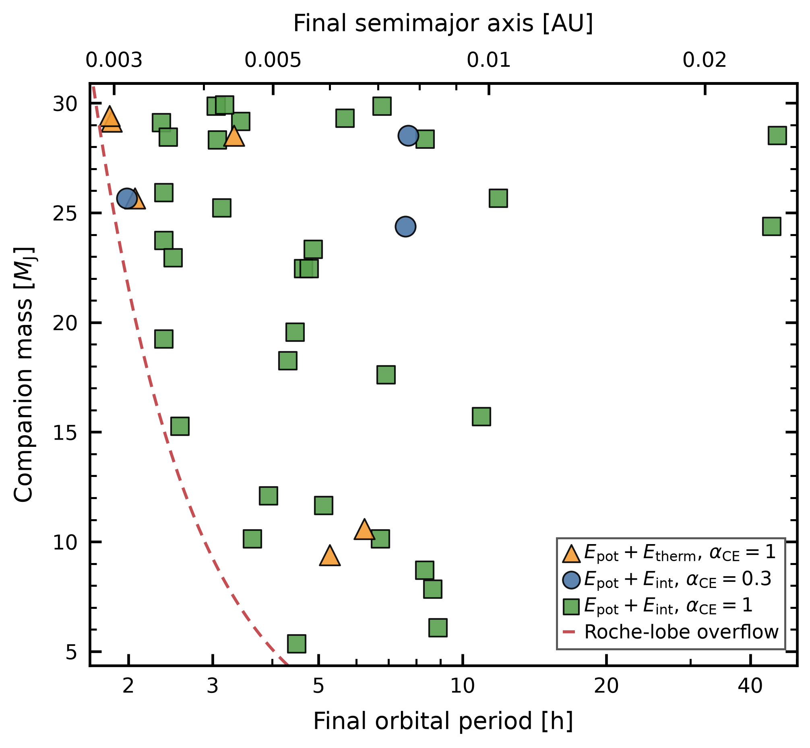

外層を放出するエネルギーは足りるか
伴星が巨星のガスに包まれる共通外層進化では、軌道が縮むことで解放されるエネルギーが、外層を吹き払う助けになります。しかし、小さい伴星ほど使える軌道エネルギーも限られます。外層を放出する前に伴星が壊れたり、中心へ合体したりするなら、近接した白色矮星と伴星の組合せは残りません。
著者らは、銀河系の恒星の質量、年齢、金属量と、観測に基づく伴星の初期分布を取り入れたモデルを使いました。白色矮星になる親星2万315個の集団から、のみ込まれた木星質量の5〜30倍の伴星295個を解析しています。星の内部構造はMESAの進化計算を用い、接触時の外層の束縛エネルギーと軌道の変化を結びつけました。
残る数は、仮定で大きく変わる
軌道エネルギーが外層放出に使われる効率を0.3と1の二通りにし、重力と熱のエネルギーを考える場合、さらに再結合を含む内部エネルギー全体を利用できる場合を比較しました。再結合とは、電離した粒子が電子を取り戻す際にエネルギーを放す過程です。そのエネルギーが実際に放出を助けるかは、共通外層進化の重要な不確実性です。
重力と熱だけでは、効率0.3で生存例はなく、効率1で6例でした。内部エネルギー全体を含めると、それぞれ3例と33例に増えます。この差は観測誤差ではなく、採用した物理の違いによる予測の幅です。重力と熱エネルギーだけを考え、放出効率を0.3とした場合の「生存ゼロ」も、内部エネルギーを最大限利用する楽観的なモデルの結果と並べて読む必要があります。
星の進化の、いつ取り込まれるか
この計算で生き残った伴星はすべて、親星が熱パルスAGB（TP-AGB）期に入ってから共通外層進化を始めた系でした。赤色巨星分枝や初期AGB期に取り込まれた伴星は、この計算では残りません。外層が弱く束縛される時期なら、小さい伴星でも放出を助け得ます。生存の可否は伴星の質量だけでは決まらず、取り込まれた瞬間の星の構造に左右されます。
残った伴星の軌道周期は多くが数時間です。下図はその質量と周期を示し、内部エネルギーの扱いによって残る軌道の範囲も変わることが分かります。ここに描かれた点は新発見の天体ではなく、集団合成から得た計算結果です。図中の上の距離目盛も、代表質量を使った近似換算となっています。


図を選ぶと原寸画像を開けます。
少数という予測を、観測で試す
白色矮星全体に対する存在率は最大0.16％で、50パーセク以内なら期待個数の上限は2.53個です。いずれも、伴星が最も残りやすいモデルに基づく予測の上限です。食による発見は軌道の向きに制約されますが、著者らが仮定した露出時間と距離の条件では、生存例はいずれもJWSTの15マイクロメートル帯で5σを超える赤外線超過を示すと予測されています。
潮汐の処方、伴星の初期分布や半径、再結合エネルギーの利用に加え、落ち込み中の星の構造を接触時のモデルで近似する点にも限界があります。この研究は、のみ込まれれば必ず消えるとも、多くが残るとも主張していません。まれな生存経路がどの仮定に支えられるかを明らかにし、近傍の白色矮星の観測で試す道筋を示しています。